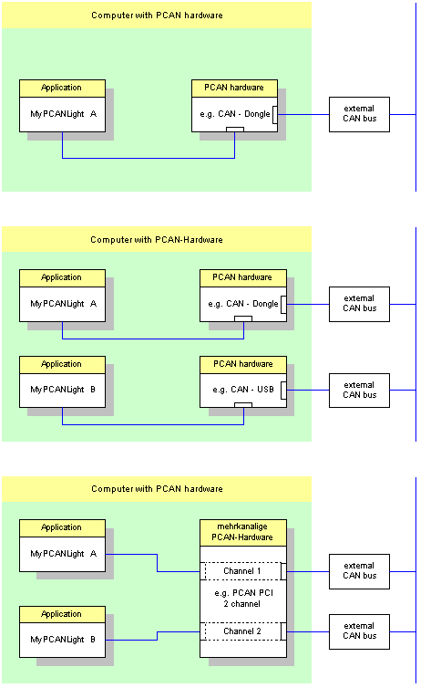
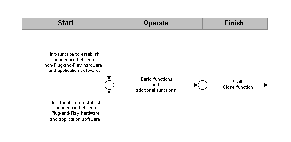

PCAN-Light is the previous version of the PCAN-Basic, the small API variant to PCAN-API. It makes a fast and comprehensive working possible with the CAN bus system. The connection between the application program and the PCAN hardware is made by the appropriate device driver. The following illustration gives a short overview.

Following rules apply to PCAN-Light client (application software) and PCAN hardware:
- A client is in each case assigned to a hardware at each time. A connection with one client to different hardware types is not possible at the same time.
- If a multi-channel hardware is present, each channel is treated like a separate hardware.
- If a Client sends a message, it will be transferred to every other Client and to the external CAN bus via the hardware.
- If a PCAN hardware is connected to a client, then no further client can access the same hardware.
- If a message is received over the hardware, it is received by every client. Every client receives only those messages, which pass its message (acceptance) filter.
- Every PCAN-Light client has a transmission queue, where CAN messages to be transmitted are waiting until the individual transmission time. At occurrence of the transmission time they are written into the transmission queue of the PCAN hardware.
- Every hardware contains a transmission queue for buffering CAN messages to be transmitted.
Schematic process flow of an PCAN-Light application software

- Start: Call the Init function to iniciate the hardware.
- Operate: After a successful start, the message filter could be adapted at your own conception. Furthermore CAN messages can be read and written. The driver of a type of hardware defined the range of functions and is structured in basic and additional functions.
- Finish: Call the Close function. This process disconnect the application software from PCAN hardware.


 See Also
See Also